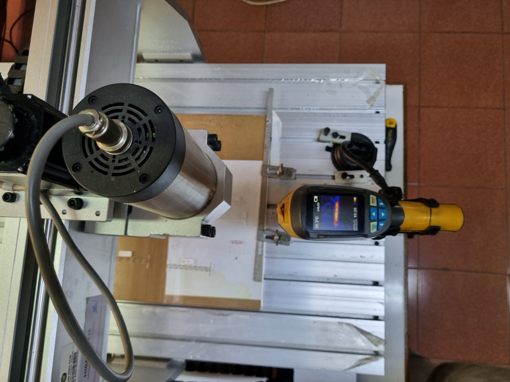
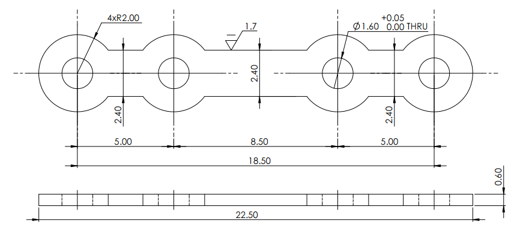
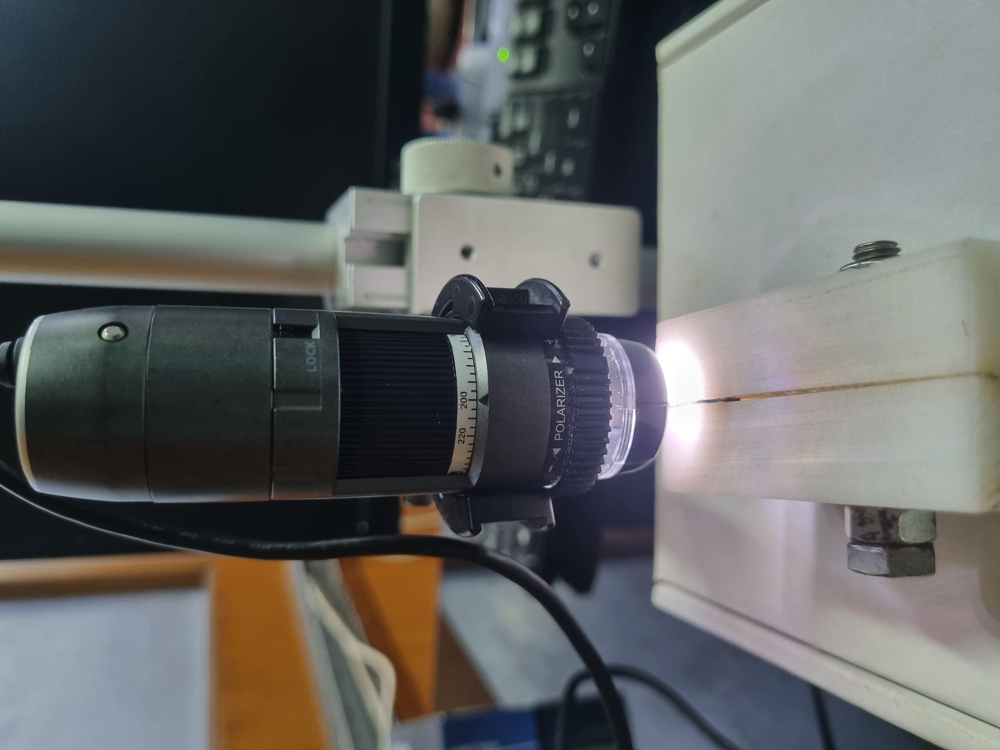
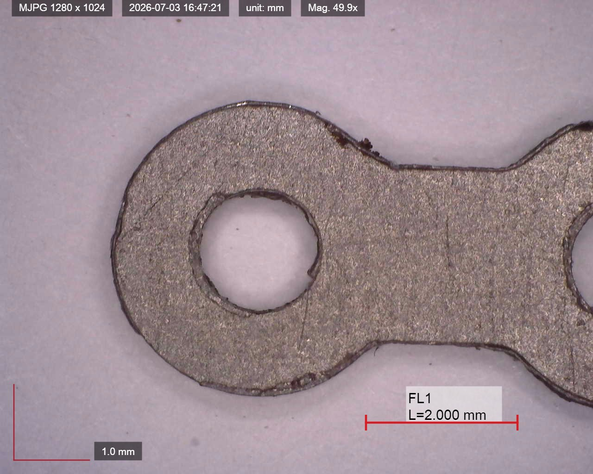
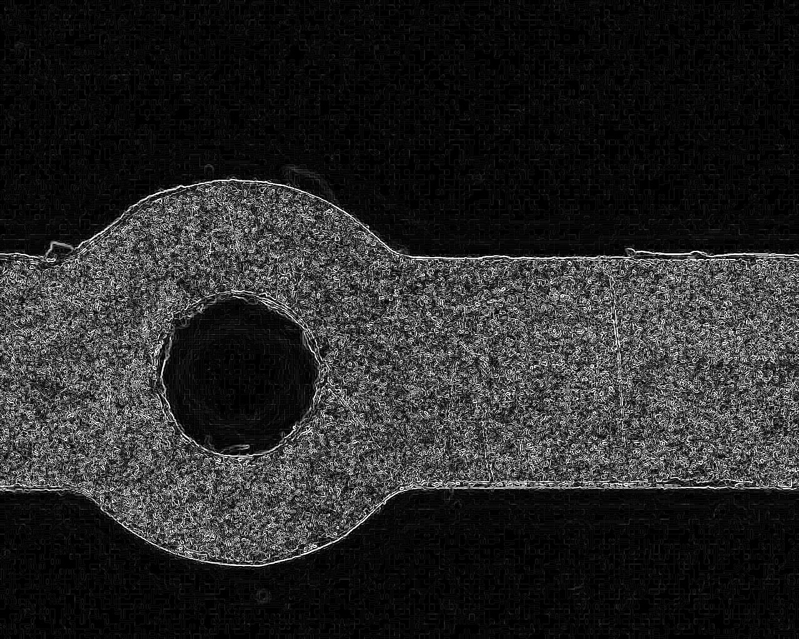
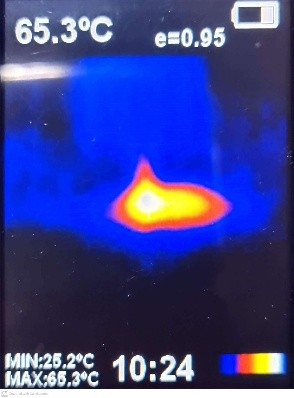
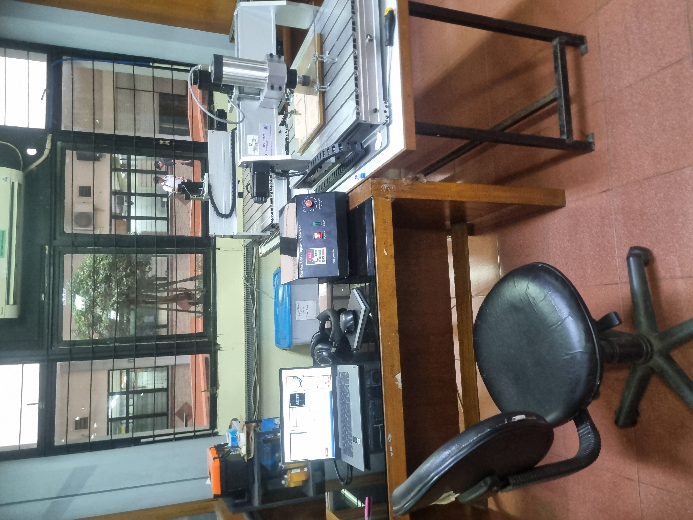

← Back to projects
Micro-Milling Research · Bachelor Thesis
Feed-Rate Optimization in CP Titanium Micro-Milling
Experimental study of dimensional accuracy, burr formation, cutting temperature, and chip characteristics in CP Titanium I-Plate micro-milling.
Research overviewExperimental study
Engineering Questions
Why does feed rate matter at the microscale?
- Background
- CP Titanium combines high ductility with low thermal conductivity. At micro-scale cutting conditions, these characteristics make dimensional control and burr formation particularly sensitive to the relationship between feed per tooth and the cutting-edge scale.
- Aim
- The study varied feed rate from 10 to 100 mm/min while holding spindle speed, depth of cut, tool geometry, and dry-cutting conditions constant. The objective was to observe how increasing feed changed dimensional accuracy, burr height, contact temperature, and chip formation.
- Result
- Higher feed rates produced progressively better dimensional accuracy and lower burr height within the investigated range. The strongest tested condition was 100 mm/min, reaching 99.4% mean dimensional accuracy and 38.2 µm mean burr height, while the maximum measured contact temperature occurred at 90 mm/min.

Research Workflow
From implant geometry to experimental validation
Experimental Setup
Controlled micro-milling of a 0.6 mm CP Titanium plate

Measurement & Analysis
Quantifying machining quality
- Inner circular profile
- Outer circular profile
- Straight profile
- Straight-edge burr
- Outer-profile burr
- Mean burr height
- Peak tool–workpiece contact temperature
- Qualitative examination of chip formation across feed-rate conditions
Dimensional observation used 50× optical magnification, while burr-height measurement used 120× magnification with Dino-Lite microscopy and DinoCapture/ImageJ processing.



Low feed per toothRubbing / ploughing influence
→Higher feed per toothIncreasingly effective chip formation / shearing
Results
Higher feed rates produced better geometric quality within the tested range
Dimensional Accuracy
98.0% → 99.4%Mean dimensional accuracy increased from 98.0% at 10 mm/min to 99.4% at 100 mm/min.
Dimensional error progressively decreased as feed rate increased, with the best measured accuracy obtained at the upper end of the experimental range.
Burr Formation
69.9 → 38.2 µm−45.4% Mean Burr HeightIncreasing feed rate substantially reduced burr formation within the tested range. The result is consistent with progressively more effective material removal compared with the low-feed condition, where rubbing, ploughing, and plastic deformation have greater influence.
Cutting Temperature
33.4 → 65.3 °C peakContact temperature showed an overall increasing tendency with feed rate, rising from 33.4 °C at 10 mm/min to a maximum of 65.3 °C at 90 mm/min before decreasing to 60.1 °C at 100 mm/min.
No visible thermal damage to the specimen or cutting tool was observed within the tested parameter range.
Best Tested Condition
100 mm/min99.4%Mean Dimensional Accuracy38.2 µmMean Burr Height60.1 °CContact Temperature
Within the experimental range, 100 mm/min provided the strongest overall combination of dimensional accuracy, edge quality, and machining productivity.
Technical Documentation
From digital design to physical measurement


Engineering Takeaway
Feed rate was a dominant parameter in the tested micro-milling regime
Across the tested range of 10–100 mm/min, increasing feed rate produced progressively better dimensional accuracy and substantially lower burr height while increasing the thermal load of the cutting process. The results indicate that higher feed conditions promoted more effective material removal compared with the low-feed regime, where rubbing, ploughing, and plastic deformation had a greater influence on machining quality.
The best overall performance was obtained at 100 mm/min, although the continuing improvement at the upper experimental boundary indicates that the absolute optimum feed rate was not established within this study.
Higher Feed-Rate RangeMQL / CoolingTool-Wear CharacterizationFEM Process Modelling